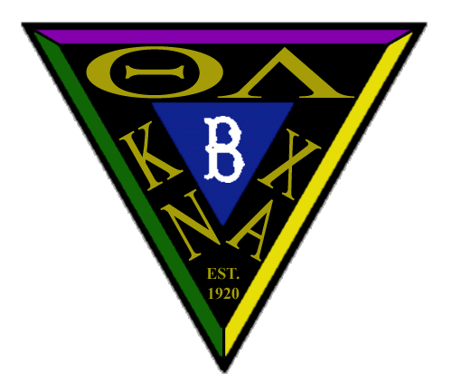

|
Lambda Chi Alpha
Theta-Upsilon Zeta
Reunion 2006 |
Cruising Brothers:
It's almost here! Following is some information you may need beforehand.
- Have you gone on line to fill out and print pre-cruise documents? Go to http://www.RCCL.com, click "Before You Board", drop down to "On Line Check In". This must be completed at least 24 hours before departure.
- Directions to Pier - Take exit 14A on the NJTP and follow signs for Route 440 South. Proceed 1 ½ miles and make left into Bayonne Ocean Terminal. Cruise terminal is 2 miles straight ahead. Parking is $15/day at this writing.
- The ship departs at 5:00 pm. We are told you must be checked in by 4:00 pm. When asked, RCCL says boarding starts at 2:00 pm. On previous cruises we have found they will board earlier depending on how quickly previous passengers have disembarked. The Explorer will not wait for you if you are late.
- Do you have picture ID?
- Luggage checked in with porters arrives at your cabin at various times - sometimes not before dinner on first evening. Carry with you any essentials. Dinner on first evening is usually casual.
- We picked the Schooner Bar (deck 4) as a meeting place for us since Bermuda Room (deck 2) is only reserved for several hours on first and last evenings. So between the time you board and 5:00 pm, we can look for each other there.
- At 5:00 pm till late dinner seating (8:30 pm) we can meet in the Bermuda Room. We have information for all, so please stop by.
- My cell phone # is 609-315-1022 and should work as long as we are in port. Please feel free to call if you think I can help in any way.
- Formal Night - We will find out when we board which night is Formal. If you don't have a tux, suit and tie are fine. Ladies have lots of leeway. We will try to arrange with ship's photographer to have group picture taken
on that night, probably before late seating dinner. Stay tuned. No obligation to purchase photo.
- Check out the excursions on line. They can be pre-booked or booked on the ship. For self-touring, a bus/ferry pass can be purchased on board.
- Cruise documents from RCCL are mailed out to everyone 25-35 days before departure.
- This is our last official notice. Please keep checking this website in case there are any changes between now and October 29th.
See you at the Schooner Bar -- or Bermuda Room.
|  |
Charlie Opalek
152 Roberts Drive
Somerdale NJ 08083
856-627-5020
856-346-9804 (w)
opalek@verizon.net (w)
mopalek@comcast.net
|